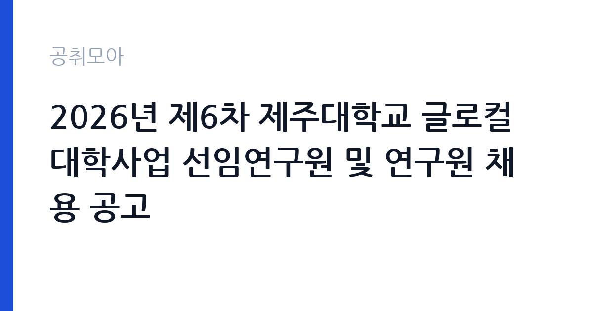

[국가기관] 2026년 제6차 제주대학교 글로컬대학사업 선임연구원 및 연구원 채용 공고
제주대학교 · 제주 · 마감 2026-10-26 (D-7) · 출처 나라일터

한눈에 보는 모집 조건
| 기관 | 제주대학교 |
|---|---|
| 공고명 | 2026년 제6차 제주대학교 글로컬대학사업 선임연구원 및 연구원 채용 공고 |
| 고용형태 | 기간제 |
| 근무지 | 제주 |
| 게시일 | 2026-10-19 |
| 마감일 | 2026-10-26 (D-7) |
지원자격, 이렇게 읽으세요
- 선임연구원 3명 연구원 5명
- 접수 ~2026-10-26 마감
- 세부 조건은 원문 공고문 확인
이 공고에서 먼저 확인할 것은 고용 형태입니다. 선임연구원과 연구원 모두 기간제로 명시돼 있습니다. 정규직이 아니므로 사업 기간과 계약 기간을 먼저 확인하셔야 합니다. 채용 인원은 선임연구원 3명, 연구원 5명입니다. 응시자격의 세부 기준, 즉 학위와 경력 연수는 첨부 공고문에 있으므로 원문을 봐야 합니다. 접수 방법도 유의하십시오. 이메일 접수만 가능하고, 주소는 jejunu_glc@jejunu.ac.kr입니다. 서류 파일명과 메일 제목을 공고문 규칙에 맞춰야 하며, 마감일 이후 도착한 메일은 접수되지 않습니다.
이 공고의 포인트
이 공고의 매력은 세 가지입니다. 첫째, 한 번에 8명을 뽑습니다. 연구직 채용에서 이 규모는 드물어 서류 통과 가능성이 상대적으로 높습니다. 둘째, 글로컬대학사업이라는 국책 사업의 실무를 경험할 수 있습니다. 지역 대학의 구조 개혁과 산업 연계를 다루는 사업이라, 교육정책이나 지역혁신 분야로 진로를 잡은 지원자에게 유용한 이력이 됩니다. 셋째, 제주 근무입니다. 수도권 공고와 경쟁 상대가 겹치지 않아, 제주에 거주하거나 이주 의사가 있는 지원자에게 유리합니다. 다만 기간제라는 점은 분명히 감안하십시오.
전형은 어떻게 진행되나
전형은 서류전형과 면접전형으로 진행됩니다. 서류에서는 학위와 경력이 사업 분야와 맞는지를 봅니다. 연구직 채용에서는 연구 실적과 수행 과제가 중요한 평가 요소입니다. 면접에서는 사업에 대한 이해와 수행 계획을 확인하며, 발표를 요구하는 경우도 있습니다. 접수는 이메일로 이뤄지고, 마감일이 2026년 10월 26일입니다. 서류 합격자 발표와 면접 일정은 개별 통보되며, 진행 상황에 따라 일정이 변경될 수 있다고 공고에 적혀 있습니다. 메일 발송 후에는 수신 확인을 받아 두십시오.
원문에서 확인한 전형 방식
2026년 제6차 제주대학교 글로컬대학사업 선임연구원 및 연구원을 아래와 같이 공개 모집하오니 역량있는 인재분들의 많은 지원 바랍니다. 1. 채용인원: 사업단 공통-선임연구원(기간제) 3명, 연구원(기간제) 5명 2. 원서접수 기간: 2026. 10. 20.(화) ~ 10. 26.(월) 3. 원서접수 방법: 응시자 제출서류를 E-mail로 제출(jejunu_glc@jejunu.ac.kr) 4. 문의처: 제주대학교 글로컬대학사업단 ☎ 064-754-4950, 4955 5. 기타사항 - 진행 상황에 따라 전형 일정 등은 변경될 수 있습니다. - 제출서류 등 자세한 내용은 공고문(첨부파일)을 참고하시기 바랍니다.
이런 분께 추천해요
- 교육정책·지역혁신 분야 연구 경력이 있는 분 — 글로컬대학사업 실무입니다
- 제주에서 근무할 수 있는 분 — 제주대학교 사업단 소속입니다
- 기간제라도 국책 사업 경험을 쌓고 싶은 분 — 8명을 한 번에 선발합니다
지원 전 체크리스트
- 선임연구원과 연구원 중 본인이 해당하는 직위를 확정했는가
- 계약 기간과 사업 기간을 확인했는가 — 두 직위 모두 기간제입니다
- 이메일 제목과 파일명 규칙을 지켰는가
- 마감일 2026-10-26 이전에 메일이 도착했는가
모집 일정과 제출 타이밍
마감은 2026년 10월 26일입니다. 접수 시작일이 10월 20일이므로 준비 기간은 일주일입니다. 권장 일정은 첫날 공고문을 내려받아 직위와 분야를 확정하고, 이틀 안에 연구 실적 요약과 자기소개서를 작성하는 것입니다. 마감 사흘 전에는 이메일로 제출하고 수신 확인을 받으십시오. 면접이 잡히면 발표 자료를 준비할 시간이 짧을 수 있으므로, 지원 단계에서 발표 개요를 미리 만들어 두면 도움이 됩니다.
직무 이해하기: 국가기관
제주대학교 글로컬대학사업단은 지역 대학과 산업, 지자체를 연결해 대학의 체질을 바꾸는 국책 사업을 수행합니다. 선임연구원은 사업 총괄이나 핵심 과제를 맡아 연구 설계와 성과 관리, 대외 협력, 보고서 작성을 수행합니다. 연구원은 세부 과제를 맡아 데이터 수집과 분석, 사업 운영 지원, 결과 보고를 담당합니다. 구체적인 업무는 지역 산업 수요 분석, 교육과정 개편 지원, 산학 협력 프로그램 기획, 성과지표 관리 등입니다. 사업 특성상 교육부와 지자체, 기업을 상대로 문서를 만들고 회의를 운영하는 일이 많습니다.
자기소개서 작성 팁
연구직 자기소개서는 실적과 직무 연관성을 중심으로 씁니다. 첫 문단에 지원 직위와 본인의 연구 분야를 한 문장으로 연결하십시오. 본론은 수행한 연구 과제를 중심으로 구성합니다. 과제명, 역할, 사용한 방법론, 결과를 순서대로 적고, 가능하면 정량적 성과를 붙이십시오. 글로컬대학사업과 직접 관련된 경험이 없다면, 지역 산업 분석이나 교육과정 개발, 산학 협력 사업 경험을 연결해 설명하면 됩니다. 마무리에는 사업단에서 맡고 싶은 과제를 구체적으로 제안하십시오. 기간제 자리이므로 단기간에 만들어낼 성과를 명확히 제시하는 것이 유리합니다.
면접 준비 포인트
면접은 연구 발표와 질의응답으로 진행될 가능성이 큽니다. 준비할 것은 세 가지입니다. 첫째, 글로컬대학사업에 대한 이해. 둘째, 본인이 수행할 수 있는 세부 과제. 셋째, 그 과제의 성과 측정 방식입니다. 질문이 들어오면 결론부터 말하고 근거를 붙이십시오. 사업 특성상 지역과 산업에 대한 이해를 묻는 질문이 나오므로, 제주 지역의 산업 구조를 간단히 정리해 가면 좋습니다. 협업 과제가 많은 만큼 갈등 조정 경험도 준비해 두십시오.
급여·근무조건 읽는 법
보수는 제주대학교의 기간제 연구원 보수 기준에 따라 정해지며, 원문 공고문에 처우 조건이 제시됩니다. 이번 공고에서는 금액이 공개되지 않았으므로 구체적인 수치는 원문에서 확인하셔야 합니다. 연구직은 학위와 경력에 따라 등급이 정해지고, 여기에 수당이 붙는 구조가 일반적입니다. 선임연구원과 연구원은 직위에 따라 보수 수준이 다르므로, 본인이 지원할 직위의 기준을 확인하십시오. 기간제이므로 계약 기간이 정해져 있고, 계약 만료 시 퇴직급여가 발생합니다. 4대 보험은 근로자 신분에 따라 적용됩니다.
자주 묻는 질문
- 정규직인가요?
아닙니다. 선임연구원과 연구원 모두 기간제로 공고에 명시돼 있습니다. 계약 기간은 원문 공고문에서 확인하십시오. - 접수는 어떻게 하나요?
이메일 접수만 가능합니다. 주소는 jejunu_glc@jejunu.ac.kr이며, 마감은 2026년 10월 26일입니다. - 몇 명을 뽑나요?
선임연구원 3명, 연구원 5명으로 총 8명입니다. 분야별 세부 요건은 첨부 공고문을 확인하십시오.
함께 보면 좋은 공고
[국가기관] 2026년 제5회 국립부곡병원 의무직 공무원 경력경쟁채용시험 공고 — 마감 2026-10-30[국가기관] 한국체육대학교 대학회계무기직원(미화원, 1명) 채용 공고 — 마감 2026-10-30[국가기관] 2026년 수도권대기환경청 기간제근로자 채용 공고 — 마감 2026-10-28출처: 나라일터 공개정보를 바탕으로 공취모아가 정리한 안내글입니다. 모집 조건·일정은 변경될 수 있으니 지원 전 반드시 원문 공고문을 확인하세요. 본 글은 정보 제공용이며 합격을 보장하지 않습니다.